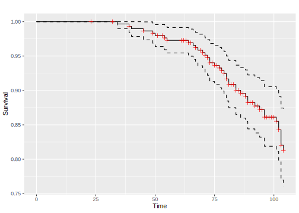
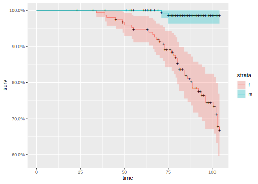
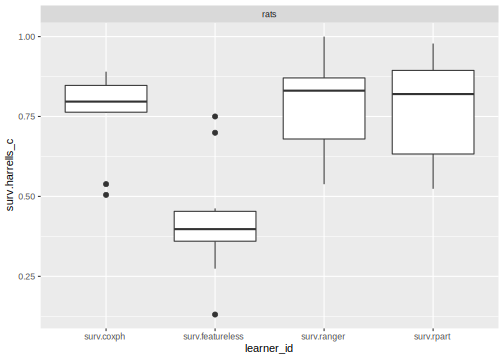
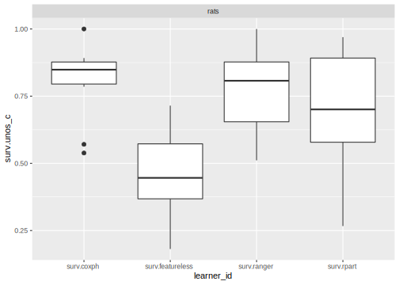

6.1 Survival Analysis
The package mlr3survival extends mlr3 with the following objects for survival analysis:
TaskSurvto define (right-censored) survival tasksLearnerSurvas base class for survival learnersPredictionSurvas specialized class forPredictionobjectsMeasureSurvas specialized class for performance measures
In this example we demonstrate the basic functionality of the package on the rats data from the survival package.
This task ships as pre-defined TaskSurv with mlr3survival.
library(mlr3survival)
task = mlr_tasks$get("rats")
print(task)
#> <TaskSurv:rats> (300 x 5)
#> Target: time, status
#> Properties: -
#> Features (3):
#> * int (2): litter, rx
#> * fct (1): sex
mlr3viz::autoplot(task)
# the target column is a survival object:
head(task$truth())
#> [1] 101+ 49 104+ 91+ 104+ 102+
# kaplan meier estimator of survival times
task$survfit()
#> Call: survfit(formula = f, data = self$data(cols = vars))
#>
#> n events median 0.95LCL 0.95UCL
#> 300 42 NA NA NA
# kaplan-meier estimator of survival times
# stratify on binarized age variable
sf = task$survfit("sex")
print(sf)
#> Call: survfit(formula = f, data = self$data(cols = vars))
#>
#> n events median 0.95LCL 0.95UCL
#> sex=f 150 40 NA NA NA
#> sex=m 150 2 NA NA NA
# plot survfit object with ggfortify
library("ggfortify")
#> Loading required package: ggplot2
autoplot(sf)
Now, we conduct a small benchmark study on the rats task using all the integrated survival learners:
# integrated learners
learners = mlr_learners$keys("^surv")
print(learners)
#> [1] "surv.coxph" "surv.featureless" "surv.ranger" "surv.rpart"
measures = mlr_measures$keys("^surv")
print(measures)
#> [1] "surv.harrells_c" "surv.unos_c"
set.seed(1)
bmr = benchmark(expand_grid(task, learners, "cv"))
print(bmr)
#> <BenchmarkResult> of 40 iterations in 4 resamplings
mlr3viz::autoplot(bmr, measure = measures[1])
